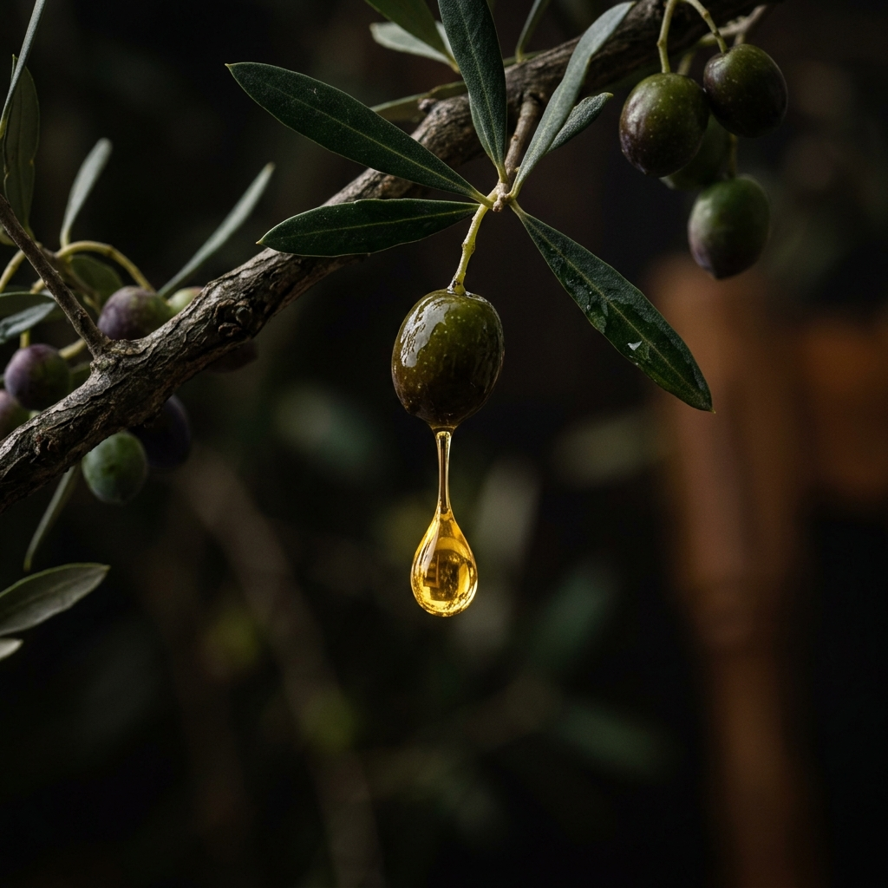
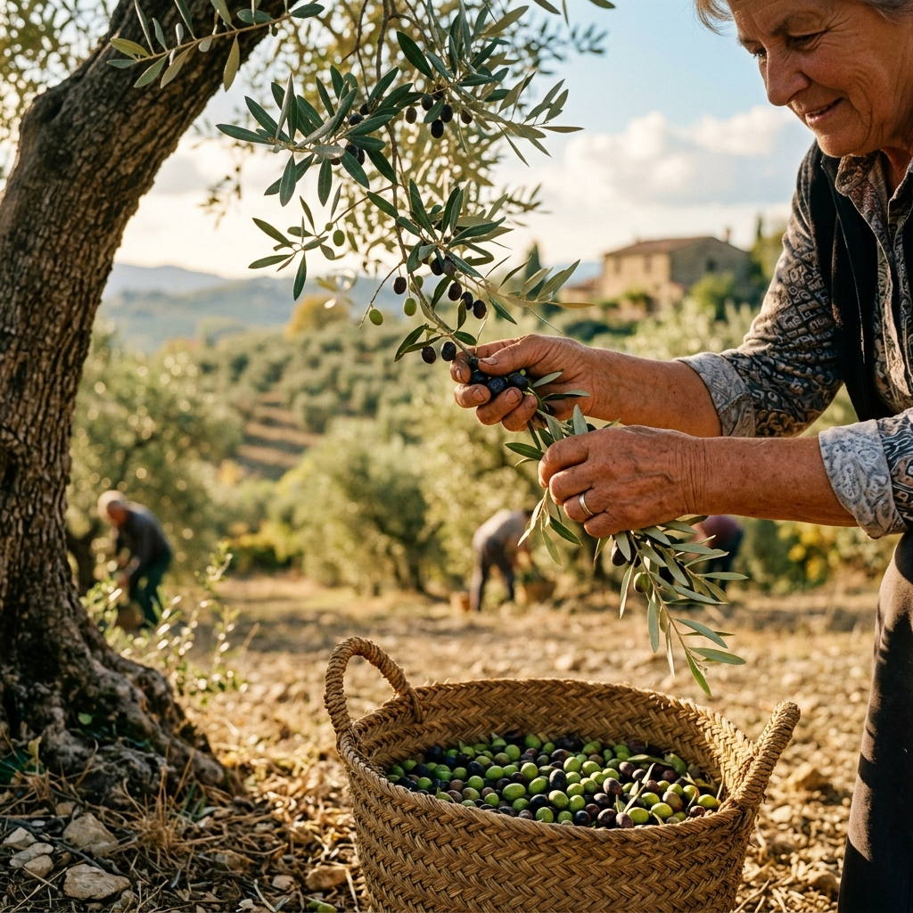

Obiado's Olea'nın hikayesi, kurucumuzun ailesiyle 2018'de Assos'a taşınmasıyla başladı. Şehirden Kuzey Ege'nin mavilikleri ve zeytin ağaçlarına uzanan bu geçiş, doğaya duyduğumuz sevgiyle birleşince kendi bahçemizde özenle ürettiğimiz zeytinyağını daha fazla insanla paylaşma hayalini doğurdu. Bugün Obiado's Olea, bu tutkunun ve birikimin nesiller boyu sürecek bir yansımasıdır.
Ege Topraklarına
Zarif Bir Dokunuş
Ailemizin bu hayali, markamızın kurucusu olan mimar ve peyzaj mimarı bir kadının doğaya olan sarsılmaz tutkusuyla hayat buldu. Onun profesyonel bakış açısı, toprağın ritmini anlayan, estetiği doğallıkla birleştiren ve sürdürülebilirliği temel alan bir üretim felsefesinin temelini attı. Bu, sadece bir zeytinyağı üretiminden öte, doğayla uyum içinde bir yaşam biçimi tasarlama projesiydi.
Kurucumuzun emeği, zeytin ağacına gösterilen saygıda ve hasadın her aşamasındaki titizlikte kendini gösteriyor. Kökleri geçmişte, yüzü geleceğe dönük bu anlayışla, Obiado's Olea'yı bir kadın girişimci markası olarak konumlandırdı. O, toprağın sunduğu cömertliği, kendi tasarımcı kimliğiyle harmanlayarak her şişeye bir imza atıyor.

Her Damlada Emek,
Sevgi ve Tasarım
Ürettiğimiz her damla zeytinyağı, bu topraklara duyulan sevginin ve bir kadının detaylara verdiği önemin kanıtıdır. Bizim için bu, sadece bir ticari faaliyet değil; bir ailenin emeğiyle başlayan, doğallığı koruma ve toprağa sahip çıkma serüvenidir. Sunduğumuz şey sadece bir ürün değil, Assos'un bereketli topraklarından süzülen rafine bir yaşam biçimidir.
Felsefemiz, nesiller boyu sürecek doğal üretim ilkelerine dayanıyor. Kurucumuzun öncülüğünde, doğayla çatışan değil, onu anlayan ve yücelten bir yaklaşımı benimsiyoruz. Bu nedenle zeytinyağlarımız, endüstriyel süreçlerden uzak, sadece güneşin, rüzgarın ve ailenin şefkatinin izlerini taşır.

Bir Kadının Azmi,
Nesiller Boyu Sürecek Bir Hikaye
Obiado's Olea, bir ailenin değerlerini paylaşma arzusundan doğdu ve kurucusunun vizyoner liderliğiyle büyümeye devam ediyor. Amacımız, bu değerli mirası koruyarak gelecek nesillere aktarmak ve daha fazla sofrayı doğallıkla buluşturmaktır. Bu serüven, toprağa olan bağlılığımızın ve kadın emeğinin gücünün bir simgesidir.
Çünkü biz inanıyoruz ki; doğaya sevgiyle ve saygıyla yaklaşmak, geleceğe bırakılacak en değerli mirastır. Bir kadın girişimcinin özeniyle başlayan bu hikaye, toprağın gücüne inanan herkesle birlikte büyüyerek devam edecek.
Ürünlerimizi Keşfedin